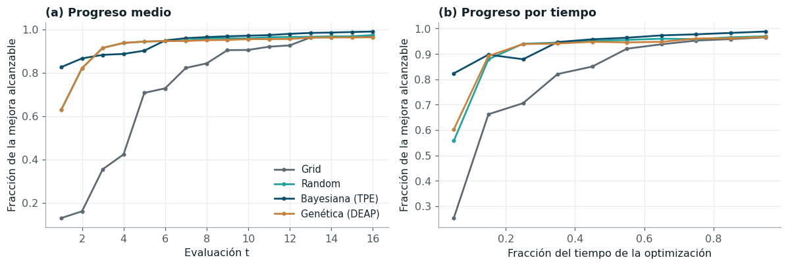
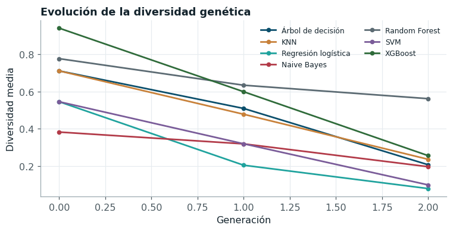

Comparación de los métodos de optimización#
Métricas, tiempos y presupuesto#
| PR-AUC externa (media) | PR-AUC externa (desv.) | Evaluaciones por optimización | Tiempo por optimización (s) | Tiempo por evaluación (s) | Tiempo total (h) | Ajustes de modelo totales | |
|---|---|---|---|---|---|---|---|
| Grid | 0.8457 | 0.1461 | 16.0 | 117.8648 | 7.3666 | 11.0007 | 16464 |
| Random | 0.8457 | 0.1452 | 16.0 | 116.6923 | 7.2933 | 10.8913 | 16464 |
| Bayesiana (TPE) | 0.8461 | 0.1436 | 16.0 | 113.8847 | 7.1178 | 10.6292 | 16464 |
| Genética (DEAP) | 0.8467 | 0.1453 | 16.0 | 127.3338 | 7.9584 | 11.8845 | 16464 |
La comparación usa como bloque cada tupla (modelo, balanceo, pliegue externo), de modo que los cuatro optimizadores se comparan sobre exactamente los mismos 336 problemas. La prueba de Friedman da χ² = 8,3 (p = 0,04), con rangos medios de 2,54 para la rejilla, 2,45 para la búsqueda aleatoria, 2,63 para TPE y 2,38 para el algoritmo genético; la diferencia crítica de Nemenyi es 0,256.
| modelo_a | modelo_b | dif_rangos | p_nemenyi | significativo | |
|---|---|---|---|---|---|
| 0 | Genética (DEAP) | Random | 0.0729 | 0.8842 | False |
| 1 | Genética (DEAP) | Grid | 0.1577 | 0.3879 | False |
| 2 | Genética (DEAP) | Bayesiana (TPE) | 0.2515 | 0.0561 | False |
| 3 | Random | Grid | 0.0848 | 0.8296 | False |
| 4 | Random | Bayesiana (TPE) | 0.1786 | 0.2767 | False |
| 5 | Grid | Bayesiana (TPE) | 0.0938 | 0.7826 | False |
La prueba global apenas rechaza la igualdad al 5 % y ningún par supera la diferencia crítica: el mayor contraste, entre el algoritmo genético y TPE, queda en p = 0,056 según Nemenyi. Las PR-AUC externas medias de los cuatro métodos difieren en menos de una milésima, y el tiempo por evaluación es prácticamente el mismo (entre 7,1 y 8,0 segundos), porque lo domina el ajuste de los modelos y no la lógica del optimizador. La conclusión es que, con 16 evaluaciones por pliegue, la calidad final de la solución no depende del método de búsqueda. Esto es coherente con la dimensión de los espacios: entre uno y seis hiperparámetros, de los cuales uno o dos dominan la respuesta (el número de vecinos, la profundidad, la tasa de aprendizaje), de modo que cualquier método razonable encuentra una configuración cercana al óptimo dentro del presupuesto. La pregunta relevante deja de ser cuál método llega más lejos y pasa a ser cuál llega antes, que responde la curva de convergencia.
Convergencia: desempeño en cualquier momento#

Figura 12 Curvas anytime. Para cada optimización, el mejor puntaje interno hallado hasta la evaluación t se expresa como fracción de la brecha entre la primera evaluación y el mejor valor alcanzado por cualquiera de los cuatro métodos en ese mismo problema; se promedia sobre los 336 problemas.#
| comparación | Δ progreso medio en t = 8 | p (Wilcoxon, unilateral) | δ de Cliff | p (Holm) | |
|---|---|---|---|---|---|
| 0 | Bayesiana (TPE) > Grid | 0.1215 | 0.0000 | 0.5769 | 0.0000 |
| 1 | Bayesiana (TPE) > Random | 0.0059 | 0.0293 | 0.0851 | 0.0587 |
| 2 | Genética (DEAP) > Grid | 0.1072 | 0.0000 | 0.4939 | 0.0000 |
| 3 | Genética (DEAP) > Random | -0.0083 | 0.5898 | -0.0337 | 0.5898 |
| 4 | Bayesiana (TPE) > Genética (DEAP) | 0.0142 | 0.0004 | 0.1203 | 0.0012 |
La hipótesis de que los métodos bayesiano y genético son más eficientes que la rejilla y la búsqueda aleatoria se evaluó con medidas cuantitativas de progreso, además de la inspección de las curvas. La evidencia es mixta. Frente a la rejilla, la ventaja es clara y grande: a mitad de presupuesto (t = 8), TPE ha recorrido el 96,4 % de la mejora alcanzable y el algoritmo genético el 95,0 %, frente al 84,3 % de la rejilla, con diferencias significativas tras la corrección de Holm y tamaños de efecto de Cliff grandes (0,58 y 0,49). El área bajo la curva anytime, que resume la calidad alcanzada por unidad de presupuesto, ordena los métodos de la misma forma: 0,942 para TPE, 0,926 para la búsqueda aleatoria, 0,922 para el genético y 0,730 para la rejilla. La rejilla pierde porque recorre el espacio en un orden sistemático y gasta sus primeras evaluaciones en un extremo del dominio; además, con varios parámetros asigna pocos niveles a cada uno, la debilidad descrita por Bergstra y Bengio [Bergstra and Bengio, 2012].
Frente a la búsqueda aleatoria, en cambio, la ventaja de TPE es pequeña (0,6 puntos de progreso a mitad de presupuesto, δ de Cliff de 0,09) y no sobrevive a la corrección de Holm, y el algoritmo genético no la supera. La explicación está en el presupuesto: TPE dedica sus seis primeras evaluaciones, el 37 % del total, a muestreo aleatorio para construir las densidades \(\ell(x)\) y \(g(x)\), y solo explota el modelo sustituto en las diez restantes; el genético, con una población de seis y dos generaciones, apenas alcanza a recombinar. Con presupuestos mayores o espacios de más dimensiones, donde la búsqueda aleatoria pierde cobertura, la ventaja teórica de los métodos guiados por el historial debería ampliarse; en este problema, su eficiencia superior se demuestra con claridad frente a la rejilla y solo de forma marginal frente al muestreo aleatorio. La forma de las curvas (Figura 12) confirma esa lectura: la búsqueda aleatoria y el genético coinciden en las primeras seis evaluaciones porque ambos parten de configuraciones extraídas con la misma semilla, y a partir de la sexta, cuando TPE empieza a explotar su modelo sustituto, su curva se separa de las demás y termina en 99,0 % de la mejora alcanzable, frente a 97,4 % de la búsqueda aleatoria.
Diversidad genética y convergencia prematura#

Figura 13 Diversidad de la población del algoritmo genético (distancia euclídea media entre individuos en el espacio de genes) por generación, promediada por modelo.#
La diversidad de la población cae en promedio un 65 % entre la población inicial y la última generación. Es una convergencia rápida, esperable con una población de seis individuos, selección por torneo de tamaño tres y elitismo, que en dos generaciones concentran la población alrededor de los mejores individuos. En un problema de optimización general sería una señal de convergencia prematura; aquí no resultó perjudicial, porque la PR-AUC externa del genético es igual a la de los demás métodos, pero indica que el algoritmo funcionó más como un explotador local alrededor de la mejor configuración inicial que como un explorador del espacio. Una población mayor o una probabilidad de mutación más alta preservarían la diversidad a costa de presupuesto.
Optimización multifidelidad#
| modelo | metodo | tiempo_s | arboles_ajustados | mejor_interno | pr_auc_bloque_externo | rondas | |
|---|---|---|---|---|---|---|---|
| 0 | xgboost | halving (factor 3) | 13.3558 | 7128 | 0.9056 | 0.4978 | 4 |
| 1 | xgboost | aleatoria (fidelidad completa) | 29.0611 | 48600 | 0.9055 | 0.4990 | 1 |
| 2 | random_forest | halving (factor 3) | 28.7044 | 2916 | 0.9221 | 0.5901 | 4 |
| 3 | random_forest | aleatoria (fidelidad completa) | 142.1162 | 19683 | 0.9237 | 0.5843 | 1 |
Successive Halving [Jamieson and Talwalkar, 2016] evalúa 27 configuraciones con un presupuesto parcial (1/27 del número máximo de árboles), conserva el tercio mejor y triplica su presupuesto en cada ronda hasta que queda una con el presupuesto completo. La métrica de fidelidad es la misma PR-AUC de la validación interna, calculada con modelos de menos árboles; el factor de reducción de 3 equilibra el número de rondas (cuatro) con el riesgo de eliminar demasiado pronto una configuración que solo destaca con muchos árboles, riesgo que crece con factores mayores. En XGBoost el método ahorra el 54 % del tiempo frente a la búsqueda aleatoria sobre los mismos 27 candidatos con fidelidad completa, con una diferencia de -0,0011 en la PR-AUC del bloque externo; en Random Forest ahorra el 80 %, con una diferencia de +0,0058.
El ahorro proviene de que la mayoría de las configuraciones se descartan tras evaluarse con pocos árboles: en Random Forest se ajustaron 2.916 árboles en total frente a 19.683 de la búsqueda completa, y en XGBoost 7.128 frente a 48.600. La calidad de la configuración elegida no se resiente, porque en ambos modelos el orden relativo de las configuraciones con pocos árboles anticipa bien el orden con el presupuesto completo: los hiperparámetros que controlan la complejidad de cada árbol (profundidad, tamaño mínimo de hoja, fracción de variables) determinan la calidad desde las primeras rondas. El riesgo opuesto, eliminar una configuración con tasa de aprendizaje baja que solo destaca con muchos árboles, es la razón para usar como recurso el número de árboles y no la tasa, y para no superar un factor de reducción de 3. El ahorro liberado podría reasignarse a evaluar más candidatos con el mismo tiempo total.